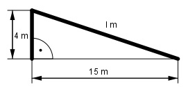

Pythagoras Aufgabe 14 Ein Baum ist bei einem Sturm in 4 m Höhe abgeknickt. Seine Spitze liegt 15 m vom Stamm entfernt. Wie hoch war der Baum in m?  l2 = 42 m2 + 152 m2 = 241 m2 |√ h = 241m2 = 15,5 m Der Baum war 4 m + 15,5 m = 19,5 m hoch.
Pythagoras Aufgabe 14 Ein Baum ist bei einem Sturm in 4 m Höhe abgeknickt. Seine Spitze liegt 15 m vom Stamm entfernt. Wie hoch war der Baum in m?
